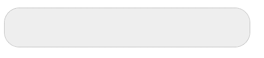
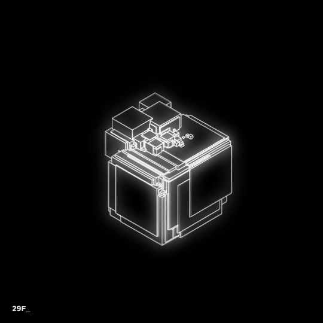

超文本標記語言（英語：HyperText Markup Language，簡稱：HTML）是一種用於建立網頁的標準標記語言。HTML是一種基礎技術，常與CSS、JavaScript一起被眾多網站用於設計網頁、網頁應用程式以及行動應用程式的使用者介面。網頁瀏覽器可以讀取HTML檔案，並將其彩現成視覺化網頁。HTML描述了一個網站的結構語意隨著線索的呈現，使之成為一種標記語言而非程式語言。 HTML元素是構建網站的基石。HTML允許嵌入圖像與物件，並且可以用於建立互動式表單，它被用來結構化資訊——例如標題、段落和列表等等，也可用來在一定程度上描述文件的外觀和語意。HTML的語言形式為尖括號包圍的HTML元素（如<html>），瀏覽器使用HTML標籤和指令碼來詮釋網頁內容，但不會將它們顯示在頁面上。 HTML可以嵌入如JavaScript的手稿語言，它們會影響HTML網頁的行為。網頁瀏覽器也可以參照階層式樣式表（CSS）來定義文字和其它元素的外觀與布局。維護HTML和CSS標準的組織全球資訊網協會（W3C）鼓勵人們使用CSS替代一些用於表現的HTML元素。
教學影片: HTML教學
<html>
<body>
<p>
hello
</p>
</body>
</html>
輸出:hello
階層式樣式表（英語：Cascading Style Sheets，縮寫：CSS；又稱串樣式列表、級聯樣式表、串接樣式表、階層式樣式表）是一種用來為結構化文件（如HTML文件或XML應用）添加樣式（字型、間距和顏色等）的電腦語言，由W3C定義和維護。CSS3現在已被大部分現代瀏覽器支援，而下一版的CSS4仍在開發中。 CSS不僅可以靜態地修飾網頁，還可以配合各種手稿語言動態地對網頁各元素進行格式化。CSS 能夠對網頁中元素位置的排版進行像素級精確控制，支援幾乎所有的字型字號樣式，擁有對網頁物件和模型樣式編輯的能力。
CSS不能單獨使用，必須與HTML或XML一起協同工作，為HTML或XML起裝飾作用。本文主要介紹用於裝飾HTML網頁的CSS技術。其中HTML負責確定網頁中有哪些內容，CSS確定以何種外觀(大小、粗細、顏色、對齊和位置)展現這些元素。CSS可以用於設定頁面布局、設定頁面元素樣式、設定適用於所有網頁的全域樣式。CSS可以零散地直接添加在要應用樣式的網頁元素上，也可以集中化內建於網頁、連結式引入網頁以及匯入式引入網頁。 CSS最重要的目標是將檔案的內容與它的顯示分隔開來。在CSS出現前，幾乎所有的HTML檔案內都包含檔案顯示的資訊，比如字型的顏色、背景應該是怎樣的、如何排列、邊緣、連線等等都必須一一在HTML檔案內列出，有時重複列出。CSS使作者可以將這些資訊中的大部分隔離出來，簡化HTML檔案，這些資訊被放在一個輔助的，用CSS語言寫的檔案中。HTML檔案中只包含結構和內容的資訊，CSS檔案中只包含樣式的資訊。 比如HTML中H2標誌這一個二級標題，它在級別上比一級標題H1低，比三級標題H3高。這些資訊都是結構上的資訊。 一般來說級別越高的標題其字型也越大，H1的字型最大，因為一般來說字型越大它表示的內容就越重要，此外一般標題都使用粗體字，來突出它們的重要性。一般來說H2使用粗體字，其字型比H3大，比H1小。這些資訊是顯示用的資訊。 在CSS出現前，假如作者要確定H2標題的顏色、字形、大小或其他顯示特徵的話，他要使用HTML中的font或其他樣式指令，光H2不夠，因為H2只是一個結構指令。假如一個標題要用斜體字、紅色的字元、白色的底色的話，作者要這樣寫：
<H2><font color="red" bgcolor="white">
<i>使用CSS</i></font></H2>
這些顯示用的指令使得一個HTML變得非常複雜，要維護也比較困難。假如所有的二級標題都要這樣來顯示的話，所有的二級標題的指令都要這麼複雜。此外讀者無法改變這些規定，假如一個讀者更喜歡藍色的標題的話，他無法改變標題的顏色，因為檔案的作者特別規定了標題的顏色。 使用CSS的話H2指令只規定文章的結構，其顯示由樣式表來規定，上面的例子可以變成這樣：
<H2>使用CSS</H2>
服從的樣式表可以規定H2指令使用斜體字，紅色字和白色背景：
H2 { color: red; background: white; font-style: italic; }
code {
background-color: #eeeeee;
border:1px dotted #888888;
width:300px;
padding: 1px 4px;
border-radius: 10px;
}
輸出:
教學影片: CSS教學
JavaScript（通常縮寫為JS）是一門基於原型和頭等函式的多範式進階直譯程式語言，它支援物件導向程式設計、指令式編程和函式語言程式設計。它提供方法來操控文字、陣列、日期以及正規表示式等。不支援I/O，比如網路、儲存和圖形等，但這些都可以由它的宿主環境提供支援。它由ECMA（歐洲電腦製造商協會）透過ECMAScript實作語言的標準化。目前，它被世界上的絕大多數網站所使用，也被世界主流瀏覽器（Chrome、IE、Firefox、Safari和Opera）所支援。 JavaScript與Java在名字和語法上都很相似，但這兩門程式語言從設計之初就有很大不同。JavaScript在語言設計上主要受到了Self（一種原型程式設計語言）和Scheme（一門函式語言程式設計語言）的影響，在語法結構上它和C語言很相似（如if條件語句、switch語句、while迴圈和do-while迴圈等）。 對於客戶端來說，JavaScript通常被實作為一門解釋語言，但如今它已經可以被即時編譯（JIT）。隨著HTML5和CSS3語言標準的推行，它還可以用於遊戲、桌面和行動應用程式的開發，以及在伺服器端網路環境執行（如Node.js）。
不同於伺服器端手稿語言（如PHP和ASP），JavaScript主要被作為客戶端手稿語言在使用者的瀏覽器上運行，不需要伺服器的支援。所以在早期程式設計師比較青睞於JavaScript以減少對伺服器的負擔，而與此同時在安全性上出現了問題。隨著伺服器變得強大，現在的程式員更喜歡運行於伺服器端的指令碼以保證安全，但JavaScript仍然以其跨平台、容易上手等優勢大行其道。同時，有些特殊功能（如AJAX）必須依賴JavaScript在客戶端提供支援。隨著引擎（如V8）和框架（如Node.js）的發展，以及事件驅動和異步IO等特性，JavaScript也被逐漸用來編寫伺服器端程式。 以下是ECMAScript通常所實作的特性。
alert("Hello, world!"); // 開啟對話視窗顯示
輸出:
Helo world!
教學影片: JAVASCRIPT教學
